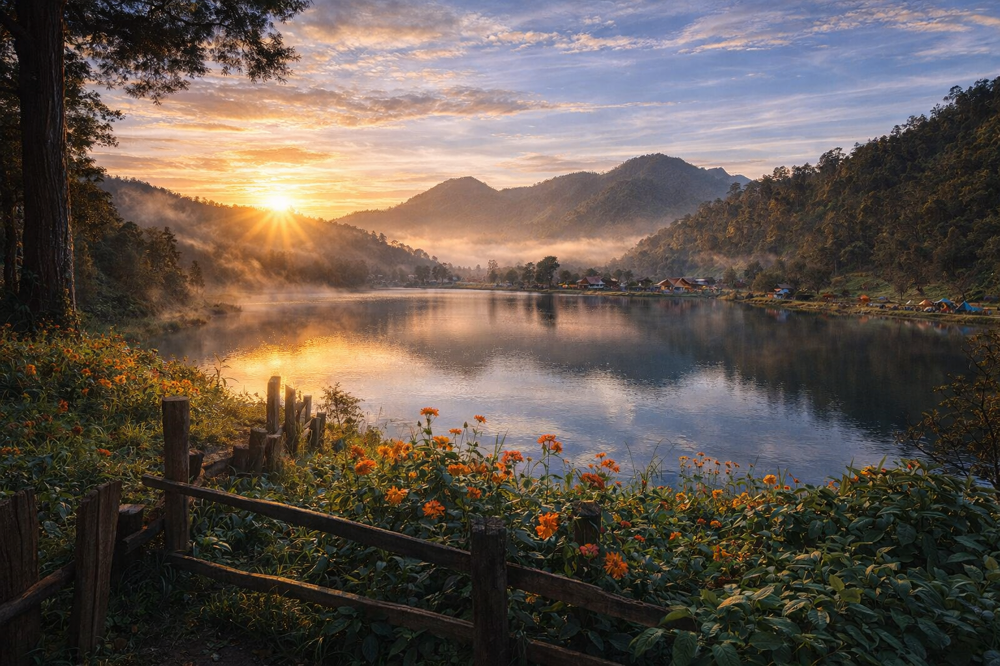
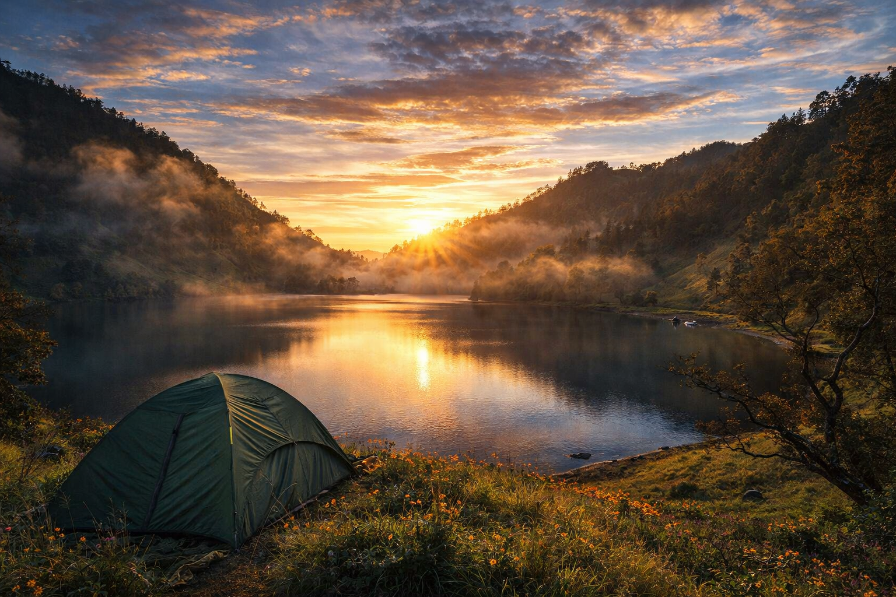
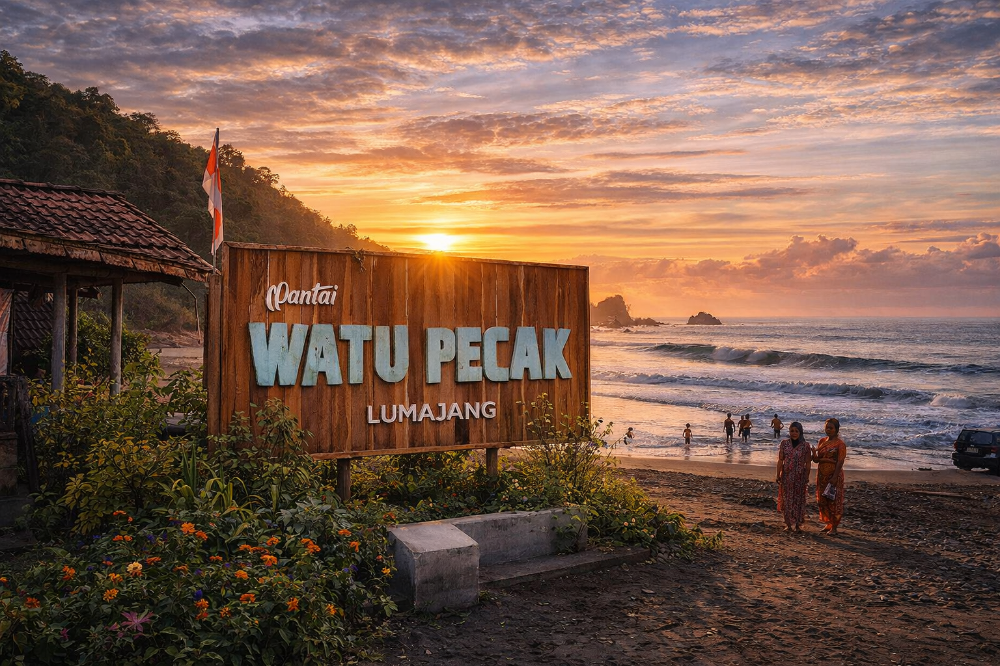
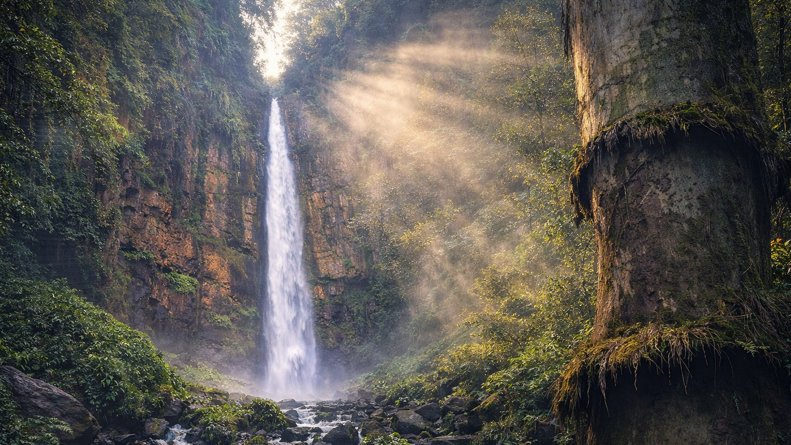
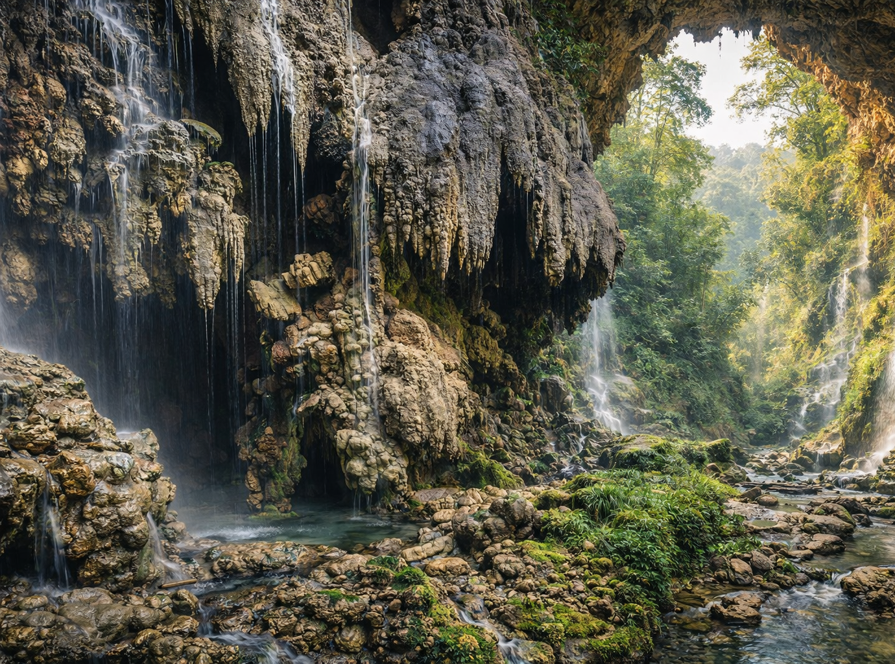

Air Terjun Tumpak Sewu
Surga tersembunyi dengan panorama air terjun berundak yang memukau dunia.
Surga tersembunyi dengan panorama air terjun berundak yang memukau dunia.






Bayangkan udara sejuk pegunungan yang menyapa kulitmu, diiringi gemuruh air terjun yang membelah tebing hijau. Dari puncak Mahameru yang agung hingga deburan ombak pantai selatan yang eksotis. Lumajang bukan sekadar destinasi, ini adalah rumah bagi petualangan jiwamu.
Temukan destinasi sesuai seleramu.
"Pemandangan Tumpak Sewu gila banget! Trekking lumayan tapi worth it."
"Pisang Agung-nya manis banget, beda sama pisang lain."
"Sunrise di B29 juara dunia! Dingin tapi nangenin."
"Ranu Kumbolo tenang banget, cocok buat healing terbaik."
"Warganya ramah-ramah, homestay di Senduro juga nyaman."
"Pantai Watu Pecak ombaknya keren, pas buat foto-foto."
"Makanannya murah dan enak. Suka banget sama kulinernya."
"Guide lokal sangat membantu dan informatif."
"Akses ke lokasi wisata makin bagus. Mantap Lumajang!"
"Kebun Teh Kertowono adem banget, cocok buat keluarga."
Ada pertanyaan atau ingin bekerjasama? Kami siap membantu promosi wisata Anda.
hello@explorelumajang.id
+62 812-3456-7890
Jalan Panglima Sudirman No. 1, Lumajang